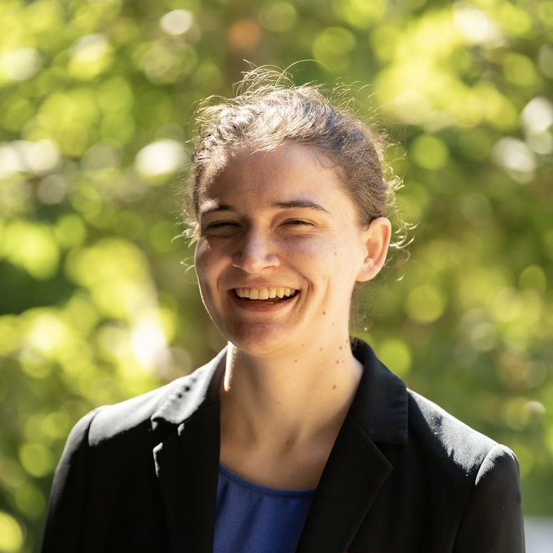

About Me
I am a systems neuroscientist interested in advancing the understanding of and treatments for mental illness through translational behavioral, imaging, and electrophysiology-based research. I received my BSc in biochemistry and neurobiology from the University of Washington in 2018, where I studied the genetic basis of movement disorders in fruit flies and hypothalamic control of energy homeostasis in mice. Presently, I am a PhD Candidate in Neurosciences at Stanford University with a National Science Foundation Graduate Research Fellowship. My thesis work comprises of using computational pose-based behavioral analysis of ketamine's pharmacokinetics and pharmacodynamics as well as applying diffusion MRI-based biophysical models of brain microstructure to ketamine.
Beyond my scientific research, I am also interested in scientific communication and in advancing equity in STEM education. In my free time, I enjoy playing guitar and flute, hiking, and reading.
